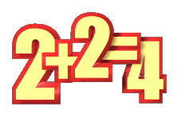
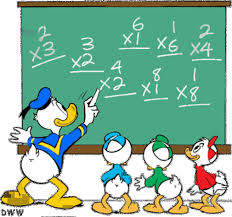

Suma

Resta

La matemática es una ciencia formal y exacta que se basa en los principios de la lógica para estudiar las propiedades y las relaciones de los entes abstractos, como los números, las figuras geométricas o los símbolos. La matemática tiene su origen en el conteo y la medición, y se ha desarrollado a lo largo de la historia con diversas aplicaciones en la ciencia, la tecnología, el arte y la filosofía.